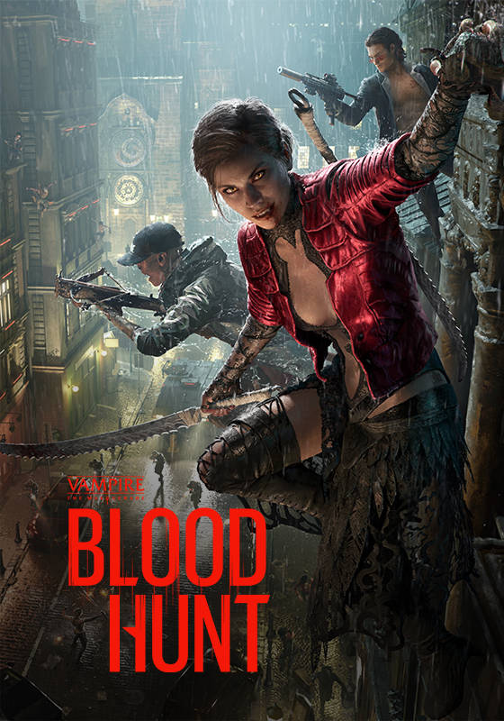
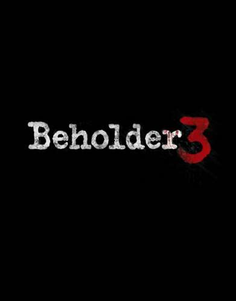
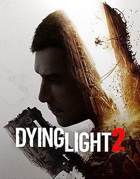
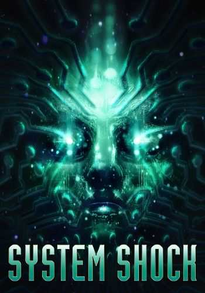
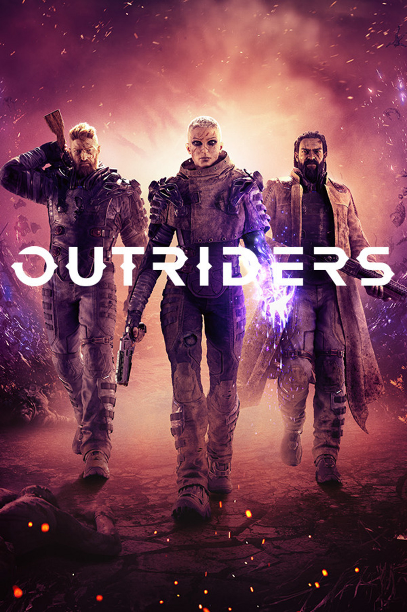
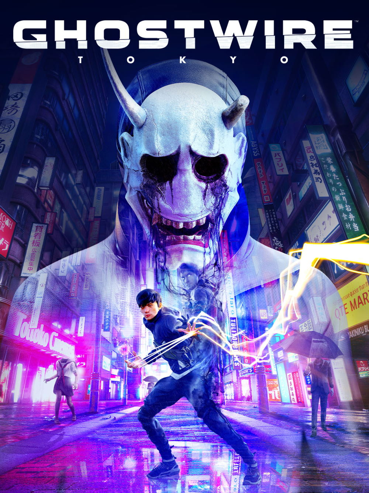
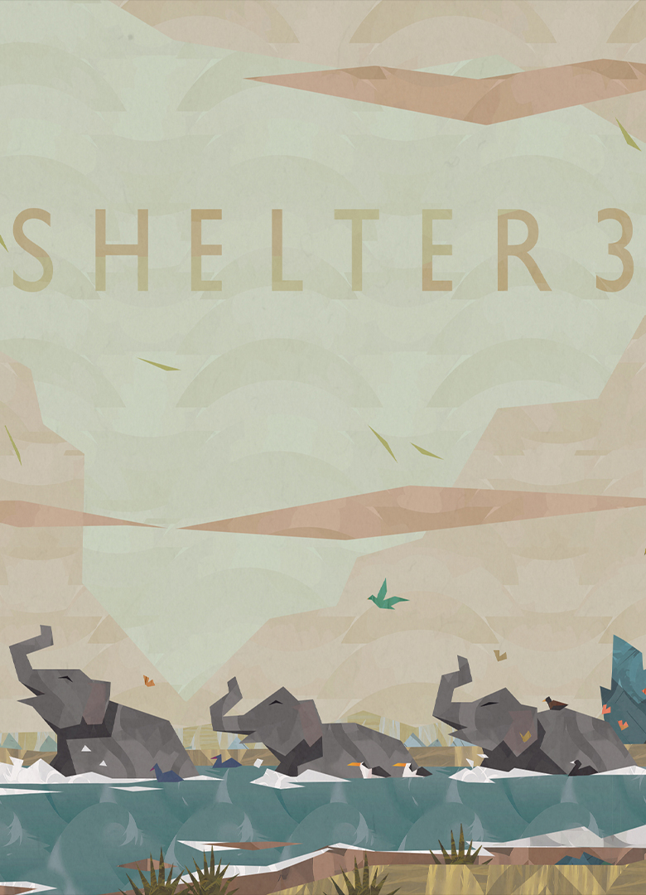
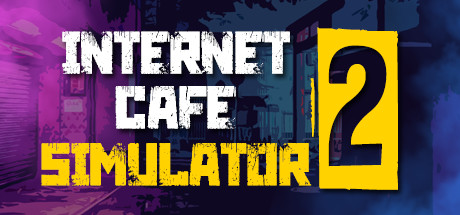

Bloodhunt — это
будоражащая кровь
бесплатная «королевская битва»
в раздираемой войной вампирских
кланов Праге. Используйте
сверхъестественные силы и хитрость,
чтобы охотиться на соперников
и солдат Инквизиции в этом шутере от третьего лица.

Blood Hunt
Новинка
Об игре Beholder 3
Под видом арендодателя,
главному герою предстоит
вламываться в квартиры жильцов,
ставить скрытые камеры, искать
запрещённые предметы и сдавать
неугодных властям. Персонаж будет работать на двух
работах — в многоквартирном доме и в Министерстве.

Beholder 3
Новинка
Dying Light 2 — это
вторая часть популярного
зомби-паркур-экшена, события
которой разворачиваются в
совершенно другой части света.
Игроков ждут в разы возросшие
масштаб и плотность событий, еще больше зомби,
а также кооператив и множество других вещей.

Dying Light 2
Новинка
System Shock — компьютерная игра,
содержащая элементы RPG и шутера
от первого лица. Игра сочетает в себе
большую свободу действий и содержит
элементы жанра киберпанк. Действие разворачивается в
2072 году, как сообщается во вступительном ролике игры.

System Shock
Новинка
Outriders - это приключенческий
шутер от создателей Bulletstorm,
рассказывающий историю живущих на
планете Инок людей. Игрокам отводится
роль Первопроходцев, которые отправляются
из человеческой колонии Первый
Город вглубь планеты в поисках загадочного сигнала.

Outriders
Новинка
Ghostwire: Tokyo — это
приключенческий боевик от
первого лица, где главный герой Акито
объединяется с духом охотника за приведениями
КК и пытается спасти свою сестру из рук главного
злодея. Всё это происходит в Токио, из которого
пропали все люди,
а по улицам бродят демоны из японских городских легенд.

Ghostwire Tokyo
Новинка
Shelter 3 — это игра в жанрах приключения,
казуальные и инди, разработанная Might and Delight.
Доступна на macOS, Linux и PC.Игровой процесс представляет
собой неспешное
движение слоновьего вожака в поисках указанных целей.

Shelter 3
Новинка
Internet Cafe Simulator 2 - это игра-симулятор,
разработанная и опубликованная Cheesecake Dev. Он
был выпущен в Steam для Microsoft Windows
7 января 2022 года. Это продолжение Internet Cafe Simulator.

Interner Cafe 2
Новинка